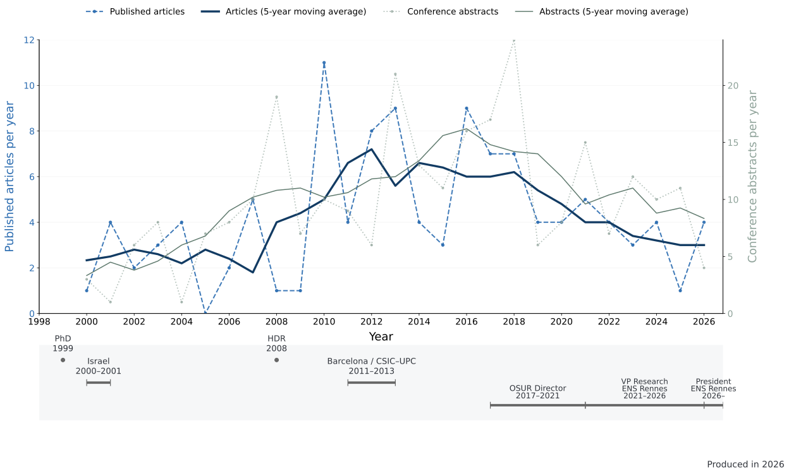

Publications over time
The record covers 114 journal articles, 256 conference abstracts and 14 proceedings. The strongest annual article output was in 2010 (11 papers); conference abstracts peaked in 2018 (24).

Show the annual data table
| Year | Articles | Abstracts | Proceedings |
|---|---|---|---|
| 2000 | 1 | 3 | 0 |
| 2001 | 4 | 1 | 0 |
| 2002 | 2 | 6 | 0 |
| 2003 | 3 | 7 | 1 |
| 2004 | 4 | 1 | 0 |
| 2005 | 0 | 5 | 2 |
| 2006 | 2 | 6 | 2 |
| 2007 | 5 | 9 | 1 |
| 2008 | 1 | 19 | 0 |
| 2009 | 1 | 5 | 2 |
| 2010 | 11 | 9 | 1 |
| 2011 | 4 | 9 | 0 |
| 2012 | 8 | 6 | 0 |
| 2013 | 9 | 20 | 1 |
| 2014 | 4 | 11 | 2 |
| 2015 | 3 | 11 | 0 |
| 2016 | 9 | 15 | 1 |
| 2017 | 7 | 17 | 0 |
| 2018 | 7 | 24 | 0 |
| 2019 | 4 | 6 | 0 |
| 2020 | 4 | 7 | 1 |
| 2021 | 5 | 15 | 0 |
| 2022 | 4 | 7 | 0 |
| 2023 | 3 | 12 | 0 |
| 2024 | 4 | 10 | 0 |
| 2025 | 1 | 11 | 0 |
| 2026 | 4 | 4 | 0 |